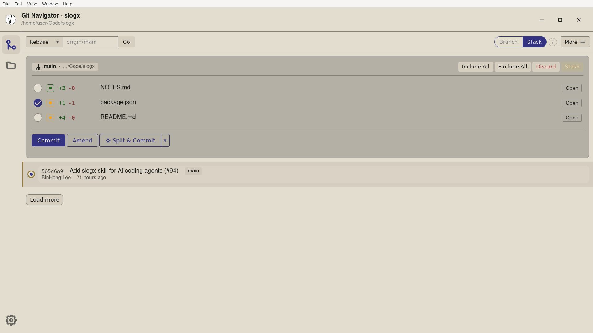

Git Navigator pins your uncommitted changes to the top of the graph in a dedicated panel. Staged, unstaged, and untracked files sit side by side, and every action — stage, unstage, amend, split, uncommit — is a click away on the same screen as the history they belong to.

Files are grouped by where they sit in Git — index, working tree, untracked — so you never have to guess what git commit would actually include.
Stage and unstage whole files, or open the diff and pick the exact hunks you want in the next commit. The rest of the change keeps waiting in the working tree.
Fold the current changes into the previous commit with one click, including updating its message — without typing a single git commit --amend.
When the last commit grew three ideas wide, split it into focused commits from the panel itself — by file, by hunk, or with AI-suggested groupings.
Yes. Staged, unstaged, and untracked files are all listed in the same panel, so the panel matches what `git status` would tell you on the command line.
Yes. Open a file from the panel to see its diff and stage or unstage specific hunks. Anything you leave unstaged stays in the working tree for a later commit.
Choose Split on the current commit. Git Navigator opens the commit's changes in the panel so you can stage hunks into a series of focused commits, or ask AI to suggest a split first.
Uncommit removes the most recent commit and returns its changes to the working tree, so they show up in the uncommitted-changes panel ready to be re-staged or rewritten.